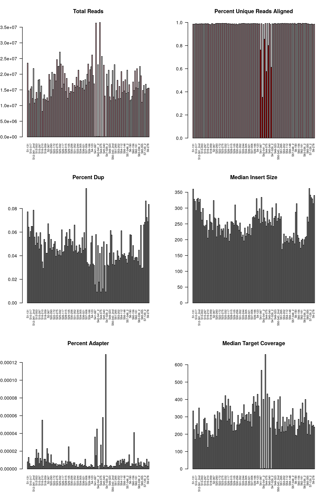

5 WGS QC stats
Below are 6 plots generated for QC purposes:
- TOTAL READS - Total number of sequencing reads generated per sample, reflecting overall sequencing depth; higher read counts generally improve coverage and confidence in downstream analyses. Most samples have 10 - 30 Mill reads [good]
- percent Unique Aligned Reads - proportion of reads that map to a single, unique location in the reference genome. High values indicate good read quality and low ambiguity in alignment. Percentage uniquely mapped is 99%+ [good]
- Percentage duplication The fraction of reads that are duplicates, typically arising from PCR amplification during library preparation. Lower duplication rates indicate higher library complexity and more independent DNA fragments. Generally less than 10% [good]
- Median insert size - The median length (in base pairs) of DNA fragments between paired-end reads. This reflects library preparation quality and should fall within the expected range for the sequencing protocol used ( 200 to 350 base pairs [good])
- Percentage adapter - The proportion of reads containing adapter sequences. Adapter contamination usually occurs when read length exceeds fragment length; low adapter content indicates good fragment size selection. content is quite low (0.012%)[good]
- Median Target Coverage - The median number of sequencing reads covering each target region (e.g., exons or capture regions). This metric reflects how well the intended genomic regions are sequenced and supports reliable variant detection. (Generally 200 reads per target -[good])
par(mfrow=c(3,2))
Hs_Metrics=read.delim(paste(AllDat$summary_metrics, "hs_metrics.stats", sep="/"), sep="\t")
Hs_Metrics$SampleType=ifelse(gsub("-", ".", Hs_Metrics$Sample)%in%SampleIDs$SAMPLE_ID, "pink", "white")
Hs_Metrics$SampleType[which(Hs_Metrics$TOTAL_READS<5E6)]="red"
ISstats=read.delim(paste(AllDat$summary_metrics, "insert_size.stats", sep="/"), sep="\t")
AM_stats=read.delim(paste(AllDat$summary_metrics, "alignment_metrics.stats", sep="/"), sep="\t")
barplot(Hs_Metrics$TOTAL_READS, names.arg = Hs_Metrics$Sample, las=2, cex.names=0.6, main="Total Reads",
col=Hs_Metrics$SampleType)
barplot(Hs_Metrics$PCT_PF_UQ_READS_ALIGNED, names.arg = Hs_Metrics$Sample, las=2, cex.names=0.6, main="Percent Unique Reads Aligned", ylim=c(0, 1),col=Hs_Metrics$SampleType )
barplot(Hs_Metrics$PCT_EXC_DUPE, names.arg = Hs_Metrics$Sample, las=2, cex.names=0.6, main="Percent Dup")
barplot(ISstats$MEDIAN_INSERT_SIZE, names.arg = ISstats$SAMPLE, las=2, cex.names=0.6, main="Median Insert Size")
barplot(AM_stats$PCT_ADAPTER, names.arg = AM_stats$Sample, las=2, cex.names=0.6,main="Percent Adapter")
barplot(Hs_Metrics$MEDIAN_TARGET_COVERAGE, names.arg= Hs_Metrics$Sample, las=2, cex.names=0.6, main="Median Target Coverage")
Note there are 6 problematic samples:
Problematic=which(Hs_Metrics$TOTAL_READS<5E6)
FAILED_SAMPLES <- Hs_Metrics$Sample[Problematic]
MetricsB=data.frame(Sample=c(Hs_Metrics$Sample[Problematic], "Median"), TotalReads=c(Hs_Metrics$TOTAL_READS[Problematic], median(Hs_Metrics$TOTAL_READS)), PctAligned=c(Hs_Metrics$PCT_PF_UQ_READS_ALIGNED[Problematic], median(Hs_Metrics$PCT_PF_UQ_READS_ALIGNED)), PcDup=c(Hs_Metrics$PCT_EXC_DUPE[Problematic],median(Hs_Metrics$PCT_EXC_DUPE)), InsertSize=c(ISstats$MEDIAN_INSERT_SIZE[Problematic],median(ISstats$MEDIAN_INSERT_SIZE)), PctAdapter=c(AM_stats$PCT_ADAPTER[Problematic], median(AM_stats$PCT_ADAPTER)))
TempA=cbind(Hs_Metrics$TOTAL_READS, Hs_Metrics$PCT_PF_UQ_READS_ALIGNED,Hs_Metrics$PCT_EXC_DUPE,ISstats$MEDIAN_INSERT_SIZE, AM_stats$PCT_ADAPTER)Note that there are some problematic samples: S41-087, S42-039, S43-308, S44-075, S45-337, S47-027 which are Germline samples with low sequencing depth. For the time being, exclude this information. Their specific metrics are summarised in the table below: